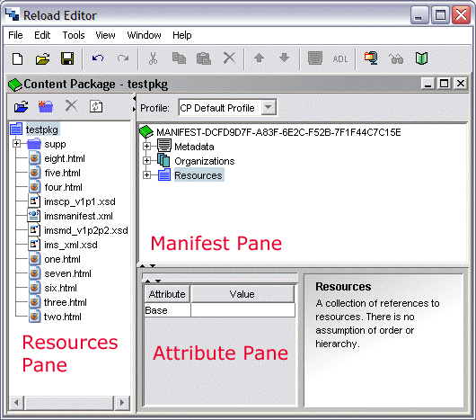

RELOAD Tool The RELOAD Editor tool looks like most other software packages. A single workspace can allow simulataneous editing and construction of multiple Content Packages, each with their own window.
